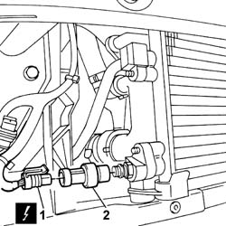
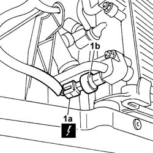

5040B20 AIR CONDITIONING SYSTEM' PRESSURE LINEAR TRANSDUCER - R.R.
- Path
- Procedures > 50 AUXILIARY UNITS > 5040 AIR CONDITIONING CASING AND COMPONENTS > 5040B system safety check devices > 5040B20 AIR CONDITIONING SYSTEM' PRESSURE LINEAR TRANSDUCER - R.R.
- Kind
- repair procedure (removal / refitting; the operation number is the code)
- Applies to
- all engines; all production periods
- Interactive page
- https://sloeber94.github.io/elrnDB-fPnd/en/#/2752885
Applies to: engines: 1.1, 1.2 8v; all production periods
 Removing
Removing
 Refitting
Refitting7055B90 Left front WHEEL ARCH LINER - R.R.
7055B91 Right front WHEEL ARCH LINER - R.R.
1. Disconnect the electrical connection for the linear sensor.
 | Name | Connector |
|---|---|---|
1 | Linear sensor (for climate control) | K120 |
2. Undo the linear sensor and remove it.

Applies to: engines: 1.3 JTD 16v; all production periods
Removing
Refitting7055B90 Left front WHEEL ARCH LINER - R.R.
7055B91 Right front WHEEL ARCH LINER - R.R.
1. Disconnect the electrical connection (1a) and undo and remove the linear sensor (1b).
| Name | Connector |
|---|---|---|
1a | Linear sensor (for climate control) | K120 |

Applies to: engines: 1.1, 1.2 8v; all production periods
Refitting
RemovingTighten the linear sensor in place.
Connect the electrical connection for the linear sensor.
| Name | Connector |
|---|---|---|
- | Linear sensor (for climate control) | K120 |
7055B91 Right front WHEEL ARCH LINER - R.R.
7055B90 Left front WHEEL ARCH LINER - R.R.
0010T84 coolant for air conditioning system dehydrate and recharge
Applies to: engines: 1.3 JTD 16v; all production periods
Refitting
RemovingTighten the linear sensor in place.
Connect the electrical connection for the linear sensor.
| Name | Connector |
|---|---|---|
- | Linear sensor (for climate control) | K120 |
7055B91 Right front WHEEL ARCH LINER - R.R.
7055B90 Left front WHEEL ARCH LINER - R.R.
0010T84 coolant for air conditioning system dehydrate and recharge
Topics linked from this page (7)
- 0010T84 coolant for air conditioning system dehydrate and recharge
- 4450B02 left front wheel r r
- 4450B04 right front wheel r r
- 7055A42 FRONT GRILLE - R+R
- 7055B90 Left front WHEEL ARCH LINER - R.R.
- 7055B91 Right front WHEEL ARCH LINER - R.R.
- 7210E10 R.R. FRONT BUMPER